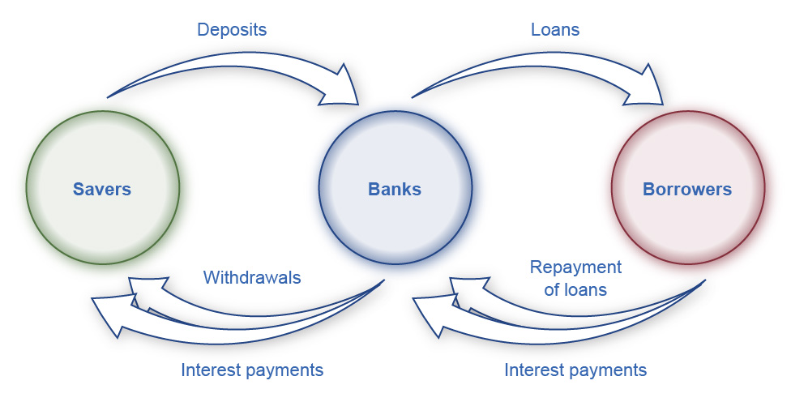

Money and banking
Bartering
To understand the usefulness of money, we must consider what the world would be like without it. How would people exchange goods and services? Economies without money typically engage in the barter system. Barter is (literally) trading one good or service for another good or service, and it is highly inefficient.
In an economy without money, an exchange between two people must involve a double coincidence of wants, a situation in which two people each want the good or service that the other person can provide. For example, if a farmer who has excess vegetables needs a pair of shoes, this farmer must find someone who makes (or at least has) shoes and who also wants vegetables. Under the best circumstances, such a trade would take some work to arrange, and in a modern economy, it would be next to impossible.
Another problem with the barter system is that it does not allow people who have perishable goods to hold onto them and trade them in the future. If someone has a perishable good to trade, he or she has to trade it immediately. And even goods that are not perishable, generally, can’t easily be stored for years or decades as “savings.”
Moreover, all of the time that it takes finding and arranging trades is extra work that cuts into everyone’s leisure time.
The three functions of money
Money solves the problems that the barter system encounters by performing three functions. First, money is an intermediary between a buyer and a seller. Instead of exchanging vegetables for shoes, the farmer can now exchange vegetables for money. He or she can then use this money to buy shoes or anything else. Performing this function makes money a medium of exchange.
Second, money is a store of value. In a barter system, someone who makes shoes could, conceivably, store some of the shoes as a means of accumulating savings. To do this, however, the shoemaker must incur the cost of a storage facility and make sure that the shoes do not get damaged. Even if the shoes are safely stored, the shoemaker has to hope that the shoes do not go out of style in six months or a year. And while this might, in some manner, work for shoes, it is impossible for perishable goods that won’t even last for weeks or months.
So, shoes could be a store of value, but they aren’t a very good one. Holding money is a much easier way of storing value. Money doesn’t need to be spent immediately because it will still have the same value (or close to it) the next day, week, month, or the next year.
Money performs this function, even though it is not a perfect store of value. In an economy with inflation, money loses some value each year. But it still remains a very efficient store of value, especially over periods of weeks or months.
Third, money is a unit of account. As such, it is the ruler by which we measure the value of all goods and services. For instance, when you go to a grocery store, it might take you some time to determine which goods you want to purchase and in which quantities. But it will take you no time at all to determine and compare the value of the tomatoes, the salmon, the flour, the potatoes, the coffee, and so on. This is because the value of each is expressed in U.S. dollars.
Anything that performs these three functions is money, and many things have been used as money throughout history: gold, silver, cowrie shells, cigarettes, cocoa beans, and many others including, of course, pieces of paper.
Commodity-backed versus fiat money
Gold and silver in the form of coins or bars are examples of commodity money. They themselves are the money. Gold and silver coins were still used into the twentieth century, but for larger amounts, pieces of paper that stood in for and could be redeemed for gold or silver was more practical. With a commodity-backed currency, each unit of the currency (e.g., a dollar) represented a specific amount of a commodity (e.g., 1/35 of an ounce of gold) that was held by a bank.
The alternative to commodity-backed money is fiat money. This is money that becomes money because the government decrees that it is, and the government controls its creation, regulates it, and prevents counterfeiting.
Commodity-backed money is intuitively appealing, while fiat money might, initially, seem odd or suspicious. But fiat money allows for much more stable economic systems, and there are no countries in the world that still use commodity-backed money.
The M1 and M2 money supply
Now that commodity-backed money no longer exists, the more important distinction for macroeconomics is between the M1 and M2 money supply. To understand the basis of this distinction, we need this definition.
Liquidity: The ease (that is, the speed and cost) with which an asset can be converted into cash.
Cash, since it already is cash, is the most liquid. A home, in contrast, is an asset and it can be converted into cash, but not very easily. So, homes are not very liquid.
These are the ways of storing money listed from most liquid to least.
-
as coins and currency
-
in checking accounts: Savings accounts are “transaction accounts” and, if it is requested, the bank is required to make the money available immediately.
-
in savings accounts: Although the exact regulations on savings accounts have changed recently, generally, money in savings accounts cannot be accessed as quickly or as easily as money in checking accounts.
-
in money market funds: These are bank deposits that are invested in short-term, safe ways. It is essentially a type of savings.
-
as time deposits or certificates of deposit: These are deposits that the holder commits to leaving in the bank for a specified period of time.
There are two points to be made about this list. First, these are all ways of storing money and it remains money. Money can also be stored in other assets—stocks, bonds, mutual funds, homes, land, expensive art—but in these cases, the asset doesn’t count as money.
Second, 1 – 5 constitute two types or definitions of money. The most liquid ones, 1 – 3, are the M1 money supply, which is probably what most people think of as money. M1 plus 4 and 5 are the M2 money supply.
Banks
You might not realize it, but when thinking about money, banks have a much more important role than just being an alternative to storing your money under your mattress. They, with guidance from the Federal Reserve, determine the amount of money that exists.

We will consider the process more carefully in a moment, but imagine that Jack deposits $100 into his bank account. The bank then uses this $100 to make a loan to Kate. Kate asks Sam to repair her roof, and when he does, she pays him with the $100.
There is just $100 here. But Jack believes that he has $100. And now Sam also believes that he has $100. Both are correct. Thanks to the bank’s ability to take in deposits and make loans, $100 has become $200.
The bank’s balance sheet
An asset is something of value owned by an asset holder. A liability is a debt. If you borrow money to buy a home, the home is the asset, and the mortgage is the liability. Your net worth is the value of your assets minus the value of your liabilities.
We will use a bank’s balance sheet to track a bank’s assets and liabilities. We will add another asset later, but for right now, the assets that we care about are (1) the cash that the bank is holding in reserve (i.e., in its vault) and (2) the value of the loans that it has made. Its liabilities are the deposits that it has accepted.
Now, let’s say that we have a small town that is completely isolated from everywhere else. There is $1,000 in currency in this town, no banks, and no money enters or leaves this town. Then one day, someone sets up a bank, and everyone deposits their money. This is the bank’s balance sheet:
| assets | liabilities | ||||
|---|---|---|---|---|---|
| reserves | $1,000 | deposits | $1,000 |
Because the money is just sitting there, the bank decides to use it make loans. It also decides to always keep reserves equal to 10 percent of deposits. In so doing, the bank has imposed a 10 percent reserve requirement on itself.
It loans all of the money that it can (given the reserve requirement). Now, it’s balance sheet looks like this:
| assets | liabilities | ||||
|---|---|---|---|---|---|
| reserves | $100 | deposits | $1,000 | ||
| loans | $900 |
Shortly after those loans are made, the money is used to make various purchases. The sellers of these goods or services (who now have $900) deposit it back into this bank.
With the $900 deposited, the balance sheet looks like this:
| assets | liabilities | ||||
|---|---|---|---|---|---|
| reserves | $1,000 | deposits | $1,900 | ||
| loans | $900 | ||||
| total | $1,900 | total | $1,900 |
Understanding what has just happened is important. Let’s start on the liabilities side (on the right). Initially, $1,000 was deposited into this bank. After the loans were made, the $900 was spent and then deposited back into the bank. Thus, deposits increased to $1,900.
On the asset side (on the left), after the $900 is deposited, it is added to bank’s reserves. (In other words, the $900 is put in the bank’s vault.) The bank had $100 in the vault. Now, with the $900, it has $1,000.
With the $1,000 held as reserves (in the vault) and $900 worth of loans, the value of the bank’s assets is the same as the value of its liabilities: $1,900.
How much money is in this town?
Before the bank existed, there was $1,000. No new money has been printed or brought into the town. But deposits are money. Therefore, there is now $1,900 in this town.
Fractional-reserve banking is the system in which banks hold only a fraction of their deposits in reserve. In our example, the bank decided to keep 10 percent of its deposits in reserve. The rest it uses for making loans. Fractional-reserve banking allows the money supply to increase beyond the amount of currency that exists. In effect, this system creates more money.
More loans, more deposits, and the money supply increases
Let’s continue the example. Right now, the bank has $1,000 in its reserves and has $1,900 of deposits. It only has to hold 10 percent of its deposits in reserve, which means that its reserves only need to be $190. It can use the rest of the $1,000 that it has in reserves right now to make loans. This will be $810.
So, it uses the $810 to make loans. This lowers the reserves (i.e., the money in the vault) to $190 and increases the amount of the bank’s loans to $1,7010 (900 + 810).
| assets | liabilities | ||||
|---|---|---|---|---|---|
| reserves | $190 | deposits | $1,900 | ||
| loans | $1,710 | ||||
| total | $1,900 | total | $1,900 |
Shortly after those loans are made, they are used to make various purchases. The sellers of these goods or services (who now have $810) deposit it back into this bank.
With the $810 deposited, the balance sheet now looks like this:
| assets | liabilities | ||||
|---|---|---|---|---|---|
| reserves | $1,000 | deposits | $2,710 | ||
| loans | $1,710 | ||||
| total | $2,710 | total | $2,710 |
And again, the supply of money has increased, although the amount of currency is still just $1,000. And, again, the bank is in a position to make more loans. It has $2,710 in deposits, which means that it only has to hold $271 in its reserves. The rest ($729) can be used to make loans.
The money multiplier
As long as there is a reserve requirement, this can't go on forever. Given a reserve requirement, the maximum amount of money that can be held as deposits is determined by this formula:
To use the formula, we can return to our starting point:
| assets | liabilities | ||||
|---|---|---|---|---|---|
| reserves | $1,000 | deposits | $1,000 |
Reserves are $1,000 and the reserve requirement is .10 (i.e., 10%). Therefore, the maximum amount that deposits can reach is $10,000.
It is possible that the bank can make a loan and that money, for some reason, is never returned to the bank as deposits. In that case, the maximum amount of deposits won’t be reached. But if the loans are deposited, then we will eventually reach this state:
| assets | liabilities | ||||
|---|---|---|---|---|---|
| reserves | $1,000 | deposits | $10,000 | ||
| loans | $9,000 | ||||
| total | $10,000 | total | $10,000 |
Since the reserve requirement is 10% and deposits are $10,000, the bank cannot make any more loans.